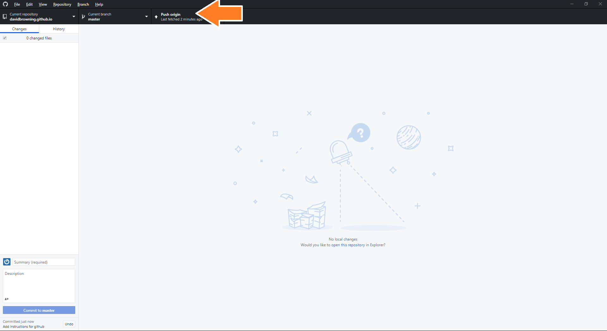
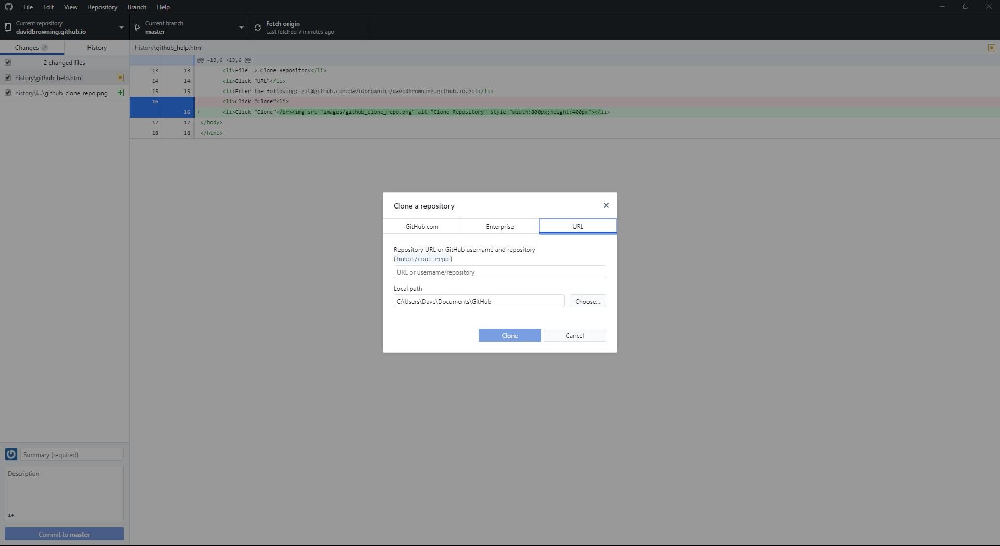

Instructions for using the github desktop software
in conjunction with the Journal Backup project for Ken and Mae Browning
Instructions were created using github desktop for windows version 1.4.2 
Instructions for regular use
- Launch the github desktop software: Windows Key, type "github", click on the github desktop icon
- Make sure the "current repository" is davidbrowning.github.io
- BEFORE DOING ANY WORK: Pull any changes that have been made. Repository => Pull
- Open the directory of the files you wish to change. Repository => Show in Explorer
- Locate and edit files you wish to change, or add additional files
- When you are ready to backup your work:
- Open the github desktop software
- Make sure the "current repository" is davidbrowning.github.io
- Enter a Summary and Description of the changes you have made
- Click the "Commit to master" button
- Click the "Push origin" button 
- Email Dave to let him know that the updates are ready Send dave an email
Instructions for setting up gitihub for journal edits (You should only have to do the following once)
- Github Software: Download Link
- Make sure github desktop software is installed
- Make sure you have a github user account: https://github.com/join?source=header-home
- Launch the github desktop software: Windows Key, Type "github", Locate the github desktop icon, press Enter
- Clone davidbrowning.github.io.git: From the github software:
- File => Clone Repository
- Click "URL"
- Enter the following: git@github.com:davidbrowning/davidbrowning.github.io.git
- Click "Clone"
- You should be ready to go!
{kind=link}
{kind=link}
{kind=link}
{kind=link}
{kind=link}
{kind=link}
{kind=link}
{kind=link}